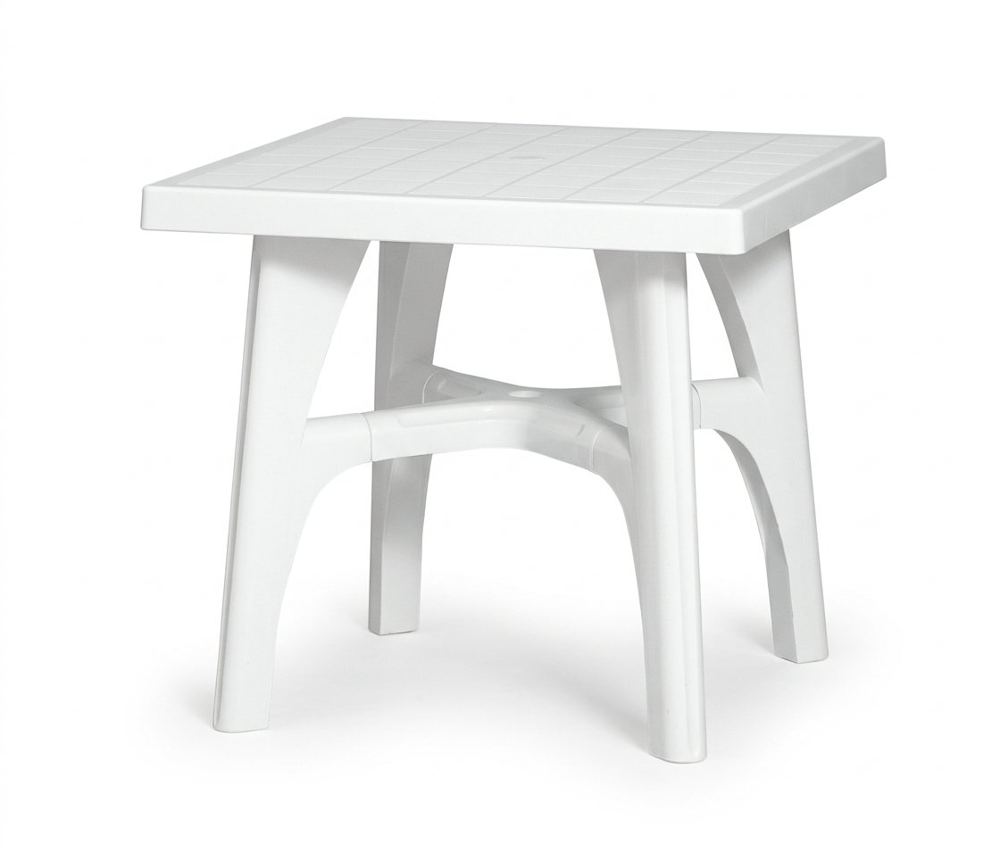

<div class="qv-media">
            <div class="qv-main">
            
        </div>
            </div>

<div class="qv-body">
            <p class="qv-cat">Plastic</p>
    
    <h2 class="qv-name" id="qvTitle">
                    <span class="qv-brand">[S・CAB]</span>
                GT1015    </h2>

            <p class="qv-type">Table</p>
    
    <div class="qv-meta">
                    <p class="qv-price">
                ¥43,500<span class="qv-price-note">（税別）</span>            </p>
                            <p class="qv-stock">
                <span class="pcx-dot" style="background:#047857"></span>
                在庫品            </p>
            </div>

            <p class="qv-desc">S・CAB社はイタリア製の純度の高い良質プラスチックにこだわり屋外でも使用できる家具を創り続けてきました。</p>
    
            <dl class="qv-spec">
                            <dt>サイズ</dt>
                <dd>W800 / D800 / H730</dd>
                            <dt>重量</dt>
                <dd>7.8kg</dd>
                            <dt>素材</dt>
                <dd>P.P</dd>
                            <dt>カタログページ</dt>
                <dd>P.255</dd>
                    </dl>
    
    
    <div class="qv-actions">
        <a class="qv-more" href="product-258.html" data-no-quickview>
            詳細ページを見る <span aria-hidden="true">→</span>
        </a>
                    <a class="qv-brand-link" href="brand-s-cab.html" data-no-quickview>
                S・CAB の製品
            </a>
            </div>
</div>
